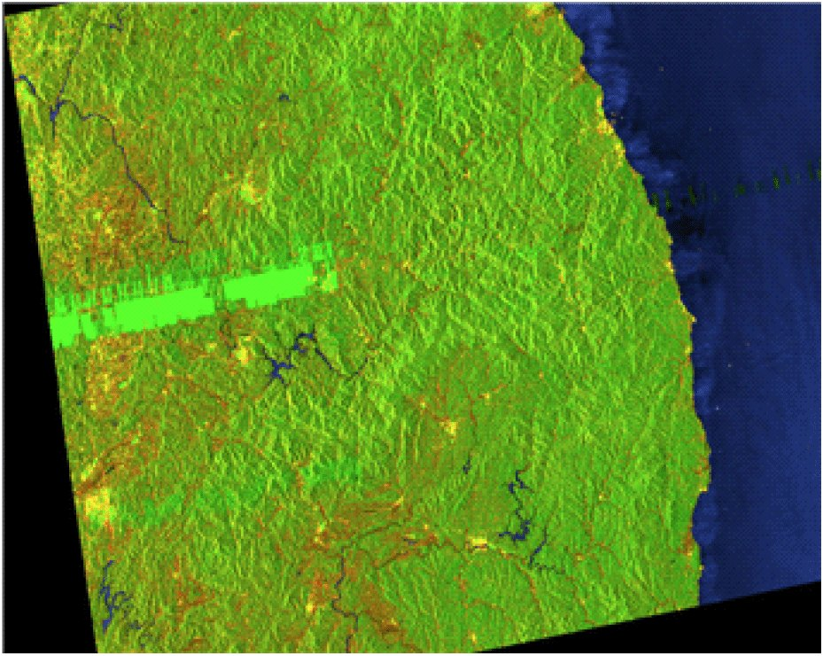

연구 과제
위성 SAR 탑재체 ECCM 기술연구

주요 내용·성과
- RPCR(랜덤 위상·부호율 천이) 기반 SAR 파형 다이버시티 기법 제안 — 낮은 상호상관, 도플러 내성 유지, 부호 길이 무제한
- 기만 재밍 시나리오에 대한 SAR ECCM 시뮬레이션 검증(단일 부호 vs 파형 다이버시티 비교)
- EuRAD 2016(런던, 10.5~10.7) 'Best young engineers award' 수상 — 이기웅(석사과정), 지도교수 이우경 (KAU 채널K, 2016.10.19)
- 국제학술지 논문: K.-W. Lee, W.-K. Lee, "Waveform diversity for SAR ECCM based on random phase and code rate transition", Int. J. Microwave and Wireless Technologies 9(6), 2017.07 (doi:10.1017/S1759078717000678)
- 석사학위논문: 이기웅, "랜덤 위상 및 부호율 천이 파형을 활용한 다중파형 기반 SAR ECCM 기술 연구", 한국항공대 대학원 전자정보공학과, 2017.02 (지도 이우경)